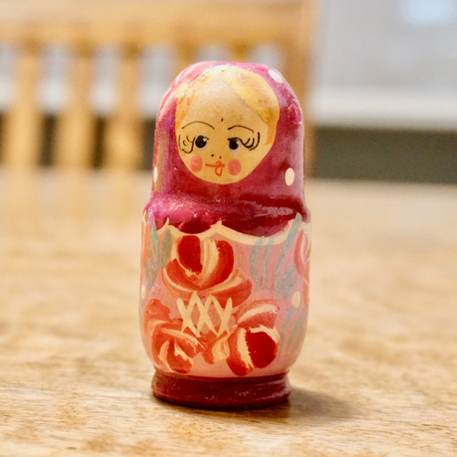

<!doctype html>
<html lang="ja">
<head>
<meta charset="utf-8">
<meta name="viewport" content="width=device-width, initial-scale=1">
<title>画像を円形にクリップ（ボックスの装飾）</title>
<link href="css/normalize.css" rel="stylesheet">
<link href="css/style.css" rel="stylesheet">
<link href="https://fonts.googleapis.com/css?family=Noto+Sans+JP:400,700&display=swap&subset=japanese" rel="stylesheet">
<link href="https://fonts.googleapis.com/css?family=Croissant+One&display=swap" rel="stylesheet">
<link href="https://use.fontawesome.com/releases/v5.6.1/css/all.css" rel="stylesheet">
</head>
<body class="post">
<header class="page-header">
  <div class="header-container">

  </div>
</header>
<div class="breadcrumb">
  <div class="bc-container">

  </div>
</div>
<div class="page-main">
  <div class="main-container">
    <header class="post-header">

    </header>
    <div class="post-contents">

    </div>
    <footer class="post-footer">
      <h2><i class="fas fa-pen-fancy"></i> Profile</h2>
      <div class="profile">
        <div class="pr-photo">
          
        </div>
        <div class="pr-text">
          <p><strong>桑山みなと</strong><br>
          大手出版社の編集者を経てライターとして独立。絵本、児童文学に詳しく、小学校の教員免許を持っているため、絵本作家や教育関係者へのインタビュー経験が多い。現在シアトルに長期滞在中で、Tansaku!では「アメリカ西海岸レポート」を連載している。</p>
        </div>
      </div>
    </footer>
  </div>
</div>
<div class="page-bottom">
  <div class="bottom-container">

  </div>
</div>
<footer class="page-footer">
  <div class="footer-container">

  </div>
</footer>
</body>
</html>
